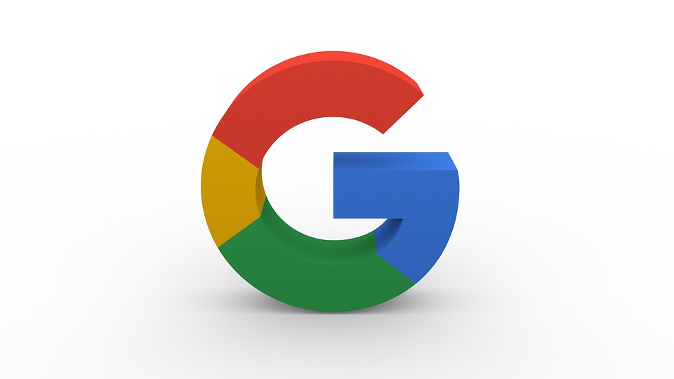

Desarrollo
Hardware
Juegos
¿Quienes Somos?
Meta suspendió la producción de su pantalla inteligente y canceló el desarrollo de un smartwatch
16 de noviembre de 2022
The Games Awards 2022 ¿Quienes son los nominados de este año
14 de noviembre
CONFIRMADO: Control 2 se encuentra en desarrollo
11 de noviembre
Como saber si mi disco esta dañado? Con estas herramientas gratuitas lo sabras.
10 de noviembre
Intel Core 13th Generacion: ¿Que nos trae de nuevo esta nueva generacion?
30 de septiembre

Google financiará a desarrolladoras de juegos independientes en América Latina
23 de septiembre de 2022